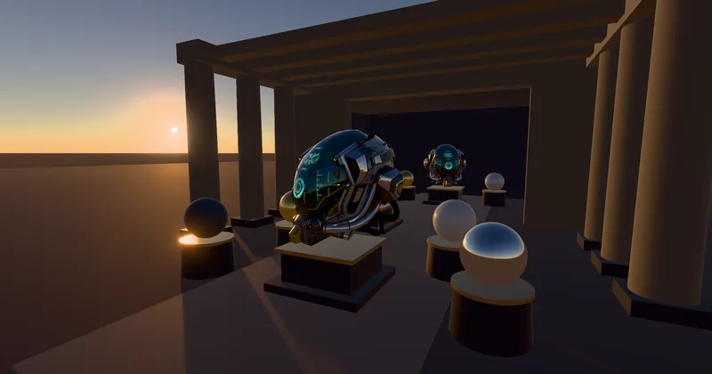

PostEffect > BuiltInEffect > Camera & Lens
Auto Exposure - RedGPU WebGPU Example
Demonstrates histogram-based AutoExposure and eye adaptation effects.
히스토그램 기반 자동 노출(AutoExposure)과 명암 순응 효과를 시연합니다.

PostEffect > BuiltInEffect > Camera & Lens
Demonstrates histogram-based AutoExposure and eye adaptation effects.
히스토그램 기반 자동 노출(AutoExposure)과 명암 순응 효과를 시연합니다.
